地政学
サルヴァドールは大西洋航路とブラジル北東部を結ぶ湾岸都市です。旧植民地首都として国家形成の記憶を持ち、バイーア州都として行政、港湾、防衛、観光を束ねます。アフリカとの歴史的な回路も外交的な意味を持ちます。

🇧🇷 ブラジル / 南米 / World City Atlas
大西洋とトードス・オス・サントス湾に挟まれた旧植民地首都です。港、丘上の旧市街、アフロブラジルの信仰、音楽、海岸の日常が重なります。
都市の骨格
サルヴァドールはブラジル最初期の首都であり、奴隷貿易、砂糖、港湾、カトリック、アフリカ系宗教、音楽が重なった都市です。観光名所の背後には、日々の通勤、露店、海風、格差、家族の暮らしがあります。
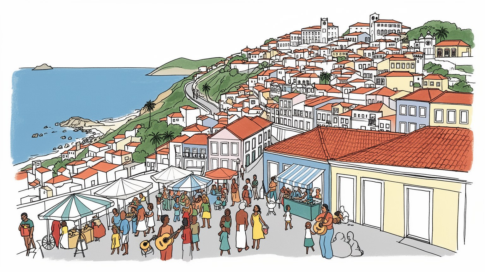
サルヴァドールは大西洋航路とブラジル北東部を結ぶ湾岸都市です。旧植民地首都として国家形成の記憶を持ち、バイーア州都として行政、港湾、防衛、観光を束ねます。アフリカとの歴史的な回路も外交的な意味を持ちます。
港湾、行政、観光、教育、医療、商業、石化関連の仕事が都市を支えます。ホテルや飲食、露店、清掃、警備、音楽イベントの労働は季節性が強く、失業、非正規雇用、長い通勤が家計を左右します。若者の機会は課題です。
カンドンブレ、カトリック、聖人祭、アカラジェ、サンバ、アシェ、カポエイラが街の暦を作ります。信仰と芸能は観光演出ではなく、奴隷制の記憶、家族、食、近所づきあいを結ぶ生活の力です。尊重が欠かせません。
観光客はペロウリーニョ、バラ灯台、海岸、音楽を巡りますが、住民の日常は坂道、バス、フェリー、市場街、学校、治安、家賃、雨の排水と結びつきます。美しい湾の眺めの近くに、住宅と不平等の課題が続きます。
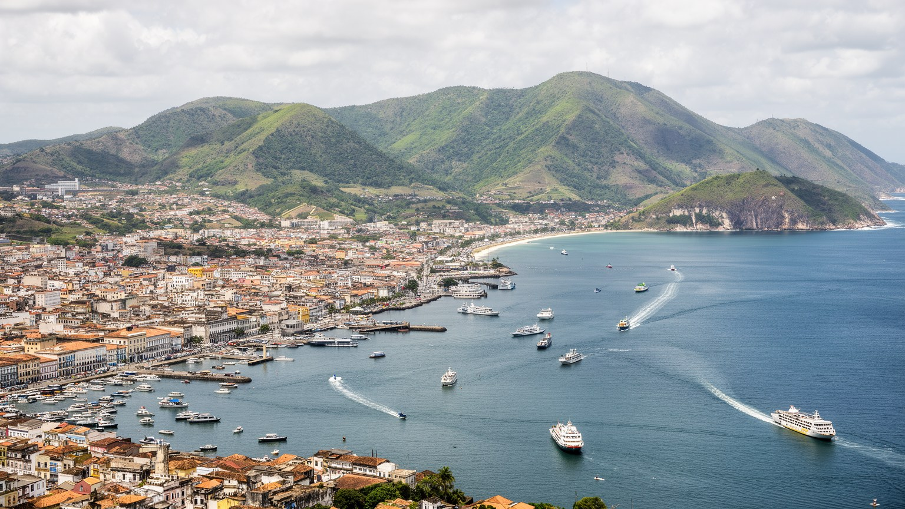
サルヴァドールの都市構造は、トードス・オス・サントス湾、大西洋岸、丘上の台地、低地の港を重ねて見ると分かりやすいです。上の街には旧行政地区、教会、広場、住宅、観光の動線があり、下の街には港、倉庫、市場、フェリー、幹線道路が並びます。エレベーターや急な坂道は観光の名物であると同時に、上下の生活圏を結ぶ実用的な装置です。湾は穏やかな水面を見せるが、物流、漁業、島々との移動、海軍、造船、フェリー、海水浴の場所でもあります。大西洋側の海岸は波、ホテル、夜の飲食、集合住宅を引き寄せ、内陸の丘陵には密な住宅地とバス交通が広がります。地形は美しい眺望を作る一方、通勤時間、豪雨時の排水、斜面災害、公共サービスの届き方を左右します。サルヴァドールを読むには、旧市街の石畳だけでなく、港へ下る道、フェリー乗り場、海岸道路、斜面の住宅、雨水が流れる谷まで一つの都市として見る必要があります。湾の向こうの島々やレコンカヴォ地方との結びつきも重要で、食材、宗教行事、親族関係、週末の移動は水上交通と道路を通じて続いています。海と丘の配置は、都市の眺めを作るだけでなく、人がどこで働き、どこへ祈り、どこで休むかを決めてきました。だからこの街では、移動のしやすさが社会的な近さを左右します。坂を上るバス、港へ下りる歩道、海岸を走る道路の状態が、観光より先に住民の一日を形づくります。
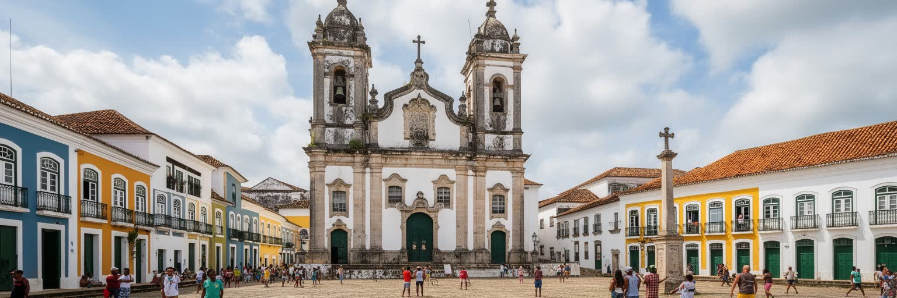
サルヴァドールは十六世紀にポルトガル領ブラジルの首都として築かれ、行政、軍事、教会、砂糖経済、奴隷貿易の結節点になりました。丘上に置かれた官庁と教会は、湾を監視し、港を管理し、植民地支配の秩序を都市空間に刻みました。白いファサードと華やかな教会装飾は美しいが、その背後にはアフリカから連れて来られた人びとの強制労働、家族の分断、抵抗、逃亡、信仰の継承があります。旧市街を保存された景観として見るだけでは、都市の核心を取り逃がします。石畳の坂、広場、修道院、砦、港は、権力と暴力、商業と祈りが同じ場所で結びついた証拠です。首都機能はのちにリオデジャネイロへ移ったが、サルヴァドールには初期ブラジルの制度と大西洋世界の記憶が濃く残りました。現在の州都としての役割も、この歴史の上にあります。市庁舎、州政府、裁判、文化機関、観光行政が、植民地期の都市軸を使い続けている点に、過去が現在の政治へ伸びるサルヴァドールらしさがあります。植民地首都としての配置は、現代の交通や観光にも影響を残します。権力の建物が集まる高所、商いが集まる低地、湾を守る砦という構図は、都市の記憶を歩ける形で残しています。その記憶を読むことは、ブラジルの成立を海から見ることでもあります。広場の儀礼、教会の鐘、行政の建物、港の荷役は、支配の時代から形を変えながら公共空間の意味を作ってきました。
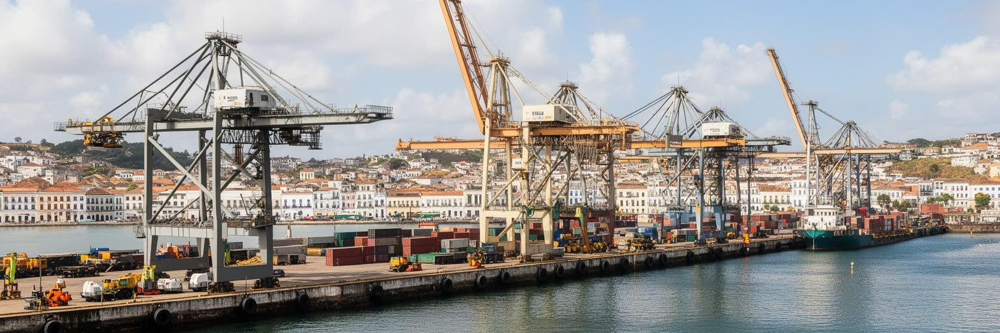
サルヴァドールの経済は観光だけではありません。港湾は食料、燃料、工業製品、建材、コンテナ、島々への物資を扱い、都市の背後にあるバイーア州の農業、鉱業、石油化学、商業を海へ接続します。周辺の工業地帯や製油、化学関連の雇用は、中心部のサービス業とは別の時間割で動きます。行政、大学、病院、金融、通信、小売も大きな雇用源で、州都として地方から人を集めます。ですが労働市場には不安定さがあります。観光の繁忙期に働くガイド、ホテル従業員、調理、清掃、警備、露店、音楽イベントのスタッフは、季節、天候、治安イメージ、航空便に影響されやすいです。港湾や建設の現場労働も、契約、技能、安全管理で差が出ります。若者には大学や文化産業の機会がある一方、長いバス通勤、低賃金、非正規雇用、家族扶養の重さが進路を狭めます。経済を数字で見るだけでは、早朝の市場、夜の厨房、港の交代勤務、海岸の売り子、イベント後の清掃が見えません。サルヴァドールの産業は、湾の物流と街のサービス労働が互いに支え合うことで成り立っています。さらに、非公式経済は街の柔軟さと脆さを同時に示します。露店、個人送迎、家内調理、近所の修理、音楽の小仕事は生活を支えますが、保険や休業補償には届きにくいです。安定した雇用を増やすことは、港や観光の成長を住民の暮らしへつなぐ条件です。働く場所と住む場所を近づける交通政策も、産業政策の一部になります。
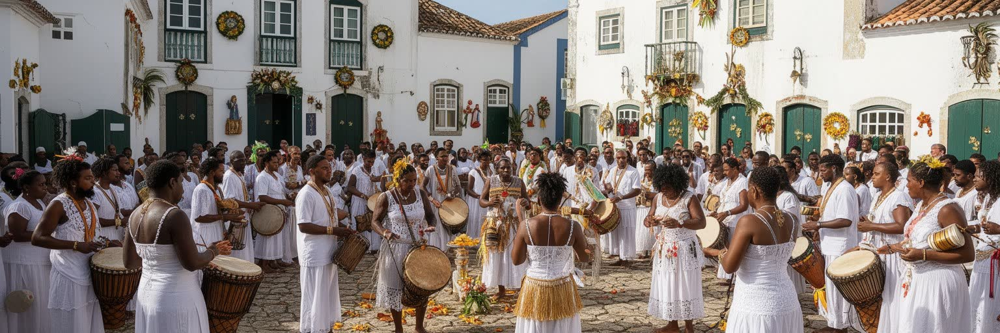
サルヴァドールはアフロブラジル宗教を読むうえで欠かせない都市です。カンドンブレのテレイロは、オリシャへの祈り、太鼓、踊り、衣装、食、祖先への敬意を通じて、奴隷制によって断ち切られたアフリカの記憶をブラジルの土地で組み直してきました。カトリックの聖人祭とアフリカ系の信仰は、単純な混合ではなく、迫害や差別を避けながら続いた知恵と抵抗の歴史を持ちます。ボンフィン教会のリボン、海の女神イエマンジャへの捧げ物、家族の儀礼、食の禁忌、白い衣服、太鼓の音は、観光的な装飾ではなく生活の秩序です。宗教施設は相談、教育、共同体の支えにもなり、黒人住民の尊厳と歴史を守る場所になってきました。一方で、宗教的不寛容、差別、商業化、外からの消費の視線も課題になります。サルヴァドールの信仰を理解するには、写真映えする祭礼だけでなく、準備、料理、掃除、師弟関係、沈黙して守られる知識に目を向ける必要があります。祈りは過去の記憶を保存するだけでなく、現在の都市で人を結び直す力として働いています。テレイロはしばしば住宅地の奥や静かな通りにあり、観光地の正面には出ないです。そこでは高齢者の知識、女性の役割、食材の調達、近所との関係が信仰を支えます。都市の宗教を尊重するとは、見学できる場面だけでなく、見せない権利を守ることでもあります。信仰の場は、都市の黒人史を守る学校でもあります。
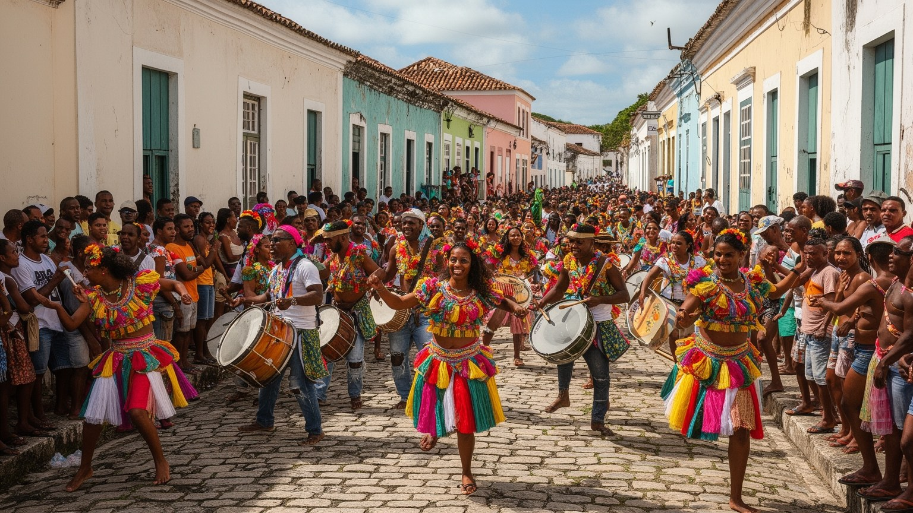
サルヴァドールの音楽は、都市の歴史を身体で読む方法です。サンバ、アシェ、アフォシェ、ブロコ・アフロ、カポエイラのリズムは、アフリカ系住民の記憶、カトリックの行列、海岸の余暇、若者文化、政治的な自己表現を結びつけます。カーニバルは巨大な観光イベントであり、同時に音響、衣装、警備、清掃、交通規制、露店、救急、リハーサル、地域団体の労働によって支えられる都市運営でもあります。路上で踊る自由のイメージの背後には、誰が中心の舞台へ立てるのか、誰が有料エリアに入れるのか、誰が混雑と騒音を受け止めるのかという階層の問題があります。音楽産業は多くの若者に誇りと機会を与えるが、収入の不安定さ、著作権、機材費、練習場所、夜間の安全も課題になります。サルヴァドールのリズムは軽い娯楽ではなく、奴隷制後の社会で黒人文化が公共空間を取り戻すための力でもありました。観光客が短い滞在で音を楽しむとき、その音がどの地区、どの宗教、どの労働、どの抵抗から来たのかを考えることで、都市の深さが見えてきます。学校、地域団体、打楽器教室、若者のダンス練習は、路上の祝祭を日常へつなぎます。祭りのない日にも音は市場、バス停、練習場、礼拝の場に残り、都市の記憶を次の世代へ渡しています。音楽は観客を集める産業である前に、地区の名前を誇りに変える公共の言葉です。
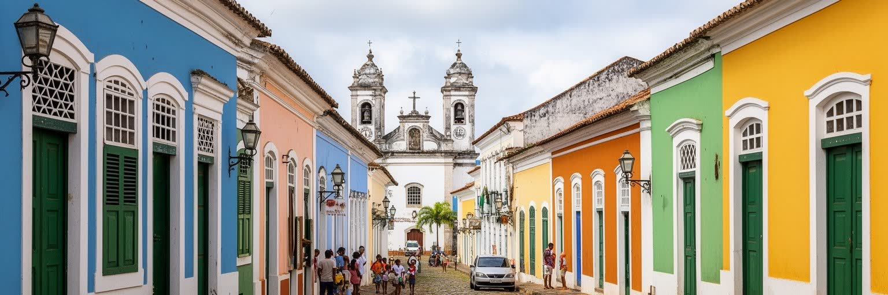
ペロウリーニョと旧市街は、サルヴァドールを象徴する景観です。色鮮やかな家並み、バロック教会、石畳、広場、坂道は、世界遺産として多くの旅行者を引き寄せます。しかしペロウリーニョという名が示すように、この場所はかつて刑罰と奴隷制の暴力を可視化した空間でもありました。保存整備によって建物は修復され、観光と文化イベントは増えたが、その過程で低所得住民が移転し、旧市街が日常の居住地から観光の舞台へ変わった側面もあります。遺産保護は必要ですが、壁の色を整えるだけでは都市の記憶は救えないです。誰がそこに住み、誰が店を出し、誰が警備され、誰が排除されるのかを見なければなりません。教会の金箔、広場の音楽、土産物店の明るさの背後には、黒人の歴史、貧困、文化の商業化、家賃、治安の問題が重なります。ペロウリーニョを歩く価値は、絵になる風景を集めることだけにないです。美しさと暴力、保存と立ち退き、誇りと消費を同時に読むことで、サルヴァドールの旧市街は単なる観光地ではなく、ブラジルの歴史を問い返す公共空間として立ち上がります。昼の観光ルートと夜の治安、週末の公演と平日の空き家、土産物店と住民向け商店の差も、遺産地区の現実です。歴史地区が生き続けるには、訪れる人のための美しさだけでなく、働く人と住む人の時間を戻す政策が欠かせません。記憶は人が使う場所に残ります。
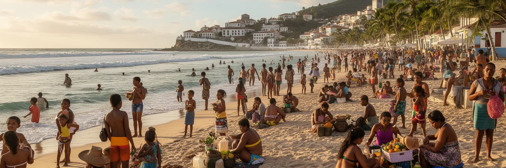
サルヴァドールの日常は海岸と強く結びついています。バラ、オンジーナ、リオ・ヴェルメーリョ、イタプアンなどの海辺では、散歩、海水浴、釣り、屋台、バー、夜の音楽、週末の家族連れが都市のリズムを作ります。海は観光資源であると同時に、住民が暑さから逃れ、友人と会い、体を動かし、少ない費用で余暇を過ごす公共空間です。ですが海岸は平等な場所に見えて、アクセスには差があります。海に近い高級住宅やホテル、整備された遊歩道、警備のある地区と、遠くの住宅地から長いバスで来る人の経験は違います。海岸で働く売り子、調理人、清掃員、警備員、音楽家は、訪れる人のくつろぎを支えますが、天候や季節に収入を左右されます。海水の汚染、排水、砂浜の侵食、交通渋滞、夜間の治安も生活の質に関わります。サルヴァドールの海岸を読むことは、青い海を眺めることだけではありません。そこに集まる身体、仕事、休息、格差、信仰、食の匂いを一緒に見ることが、湾岸都市としての現実を浮かび上がらせます。早朝の漁、昼の強い日差し、夕方のランニング、夜のバーは、同じ海岸を別の都市に変えます。海辺の自由は、公共トイレ、照明、交通、清掃、救助体制があって初めて多くの人に開かれます。日陰の少ない歩道や荒れた排水は、短い観光では見過ごされるが住民には毎日の問題です。海岸の整備は景観政策である前に、誰もが水辺へ届くための生活政策になります。
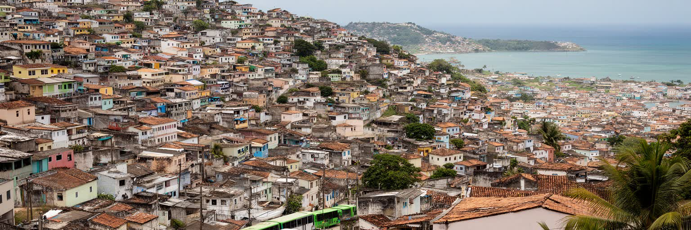
サルヴァドールの魅力は強いが、都市の不平等も深いです。海岸や旧市街の観光地、行政地区、大学、病院に近い場所と、丘陵や郊外の密な住宅地では、通勤時間、治安、学校、医療、排水、緑地へのアクセスが大きく異なります。バスは多くの住民の生活線ですが、乗り換えや渋滞は働く時間と家族の時間を削ります。斜面に広がる住宅では、豪雨時の土砂災害、排水、階段、救急車の入りにくさが課題になります。住宅の不足や家賃の負担は、若者、単身母親、高齢者、非正規労働者に重くのしかかります。黒人住民が多数を占める都市であるにもかかわらず、教育、所得、雇用、警察との関係には歴史的な人種差別の影が残ります。観光が成功しても、地元の人が安全で便利に暮らせなければ都市の豊かさは限られます。公共交通、住宅改善、斜面対策、学校、医療、文化施設、雇用政策は切り離せません。サルヴァドールを読むには、海を見下ろす美しい眺望と、その眺望の背後で長い坂を上り下りする生活を同時に見る必要があります。不平等は都市の周縁だけでなく、中心のすぐ隣にもあります。治安の議論も、犯罪の数字だけでは足りません。若者が夜に安全に帰れる交通、警察に頼れる関係、文化活動へ参加できる場所、学校の先にある仕事がそろって初めて、都市への信頼は育ちます。住宅は屋根だけでなく、尊厳と移動の権利です。公共投資の行き先が、都市の未来を静かに決めていきます。
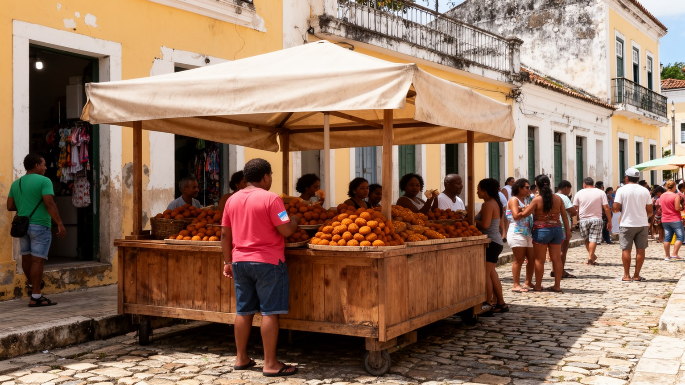
サルヴァドール観光は、旧市街、バラ灯台、海岸、音楽、宗教祭礼、バイーア料理によって強い個性を持ちます。アカラジェ、ムケッカ、ヴァタパ、デンデ油、ココナツ、香辛料の味は、アフリカ系の食文化、海の資源、市場、女性の露店労働を結びつけます。白い衣装でアカラジェを売るバイアーナは観光の象徴であると同時に、信仰、家族、技能、路上の権利を背負う働き手でもあります。観光客が料理を楽しむ背後には、魚を運ぶ人、厨房で仕込む人、路上で立ち続ける人、清掃する人、警備する人がいます。観光は外貨と雇用を生むが、価格上昇、混雑、治安対策、文化の表面化、短期雇用ももたらします。食文化を単なる名物として消費すると、その歴史と労働が見えなくなります。市場での買い物、宗教儀礼の料理、家庭の昼食、海岸の簡単な食事まで見ると、サルヴァドールの味は都市の社会関係そのものだと分かります。旅の質は、店の見栄えだけでなく、地域の人が誇りを持って働き、暮らし続けられるかで決まります。料理はこの都市の記憶を、香りと手仕事で現在へ渡しています。観光客にとっての一皿は短い体験でも、売る側には仕入れ、仕込み、場所代、天候、家族の生活があります。食を通じて都市を見るなら、味の豊かさと働く人の条件を同じテーブルに置く必要があります。良い旅は、食べる喜びと敬意を両方持つことで深くなります。
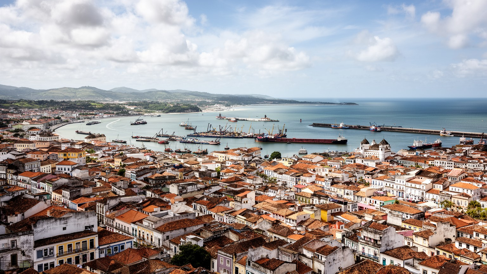
サルヴァドール・ダ・バイーアは、ブラジルの始まりを語る都市であり、同時に現在の不平等と文化の力を示す都市です。湾を見下ろす旧市街、港、教会、カンドンブレのテレイロ、カーニバルの路上、海岸の露店、斜面の住宅、バス停、大学、病院は、一つの観光イメージには収まらないです。植民地支配と奴隷制の暴力は、石畳や地名だけでなく、黒人文化の創造性、宗教の継承、食と音楽の力としても現在に残ります。都市の誇りは、過去を美化することではなく、その痛みを隠さずに公共空間で語り直すことから生まれます。経済面では港湾、行政、観光、教育、石油化学、サービス労働が重なり、暮らしは海風と坂道、雨とバス、祭礼と治安、家賃と家族扶養の間で組み立てられます。サルヴァドールを読む鍵は、明るい色彩や音楽の高揚を、その背後にある労働、信仰、差別、住まいの条件から切り離さないことにあります。湾岸の美しさと都市の困難を同時に見ると、この街は過去の遺産都市ではなく、黒い大西洋の記憶を使って未来を考える生活都市として見えてきます。訪れる人にとって重要なのは、祝祭の熱気を受け取るだけでなく、誰の歴史がその熱気を生み、誰が都市の維持を担っているかを考える姿勢です。サルヴァドールは、海と音楽の都市である前に、記憶を生活へ変えてきた人びとの都市です。その視点が街歩きを深くします。